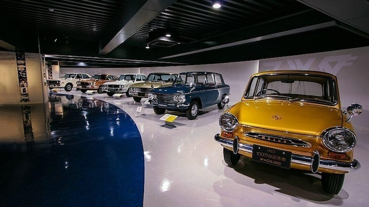
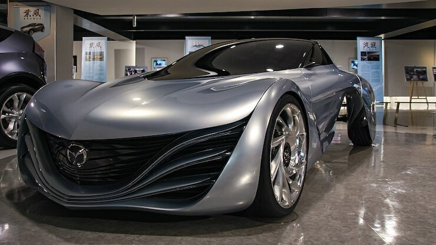

Mazda Museum
The Mazda Motor Corporation, founded in Hiroshima in 1920, retains its headquarters in the city of its origins. In addition to the headquarters, Mazda owns a large plot of coastal land which accommodates research and development laboratories, factories, and shipping facilities. The company museum and part of a factory are made available for public viewing.
Like Toyota to Nagoya, Mazda plays a large role in Hiroshima's economy. Although Mazda is not as large as Toyota, it still produces about a million vehicles a year and is an innovative player in the Japanese auto industry. For instance, in 1991 Mazda became the first Japanese company to win the Le Mans Grand Prix.
To visit the Mazda Museum, reservations must be made online beforehand, as the facilities can be seen only on a guided tour. Tours for individual travelers are available twice per day, including one tour in English, and last about 90-120 minutes. Reservations can be made up to three months in advance.
Visitors to the museum first assemble at the Mazda head office building and sign in at the front desk. When the tour is scheduled to begin, a Mazda tour guide directs visitors onto a bus to take them to the museum building on the nearby grounds of Mazda's Hiroshima Plant.
The museum offers an overview of Mazda's history, a look into the technology of its automobiles and the prospects for its future developments. The tour then passes through an actual vehicle assembly line, where visitors can see a variety of different car models being produced. At the end of the tour there is a shop featuring Mazda goods.
